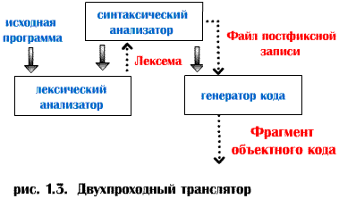

Двухпроходный транслятор
Возможны и другие способы структурной организации компилятора. На рис. 1.3 показана структура двухпроходного компилятора, занимающая промежуточное положение между трехпроходным и однопроходным вариантами организации. В этом случае синтаксический анализатор, вызывая блок сканирования, получает лексему за лексемой и строит файл постфиксной записи программы. Генератор кода считывает этот файл и создает объектный код программы. Подобной структуре свойственно относительно небольшое время выполнения, так как программа считывается лишь дважды (исходный текст и постфиксная запись). В этом случае легко разрешается проблема с оператором перехода вперед на метку, так как эта метка считывается на фазе первого прохода, перед вызовом генератором кода. В такой компилятор при необходимости легко включить блок оптимизации.
